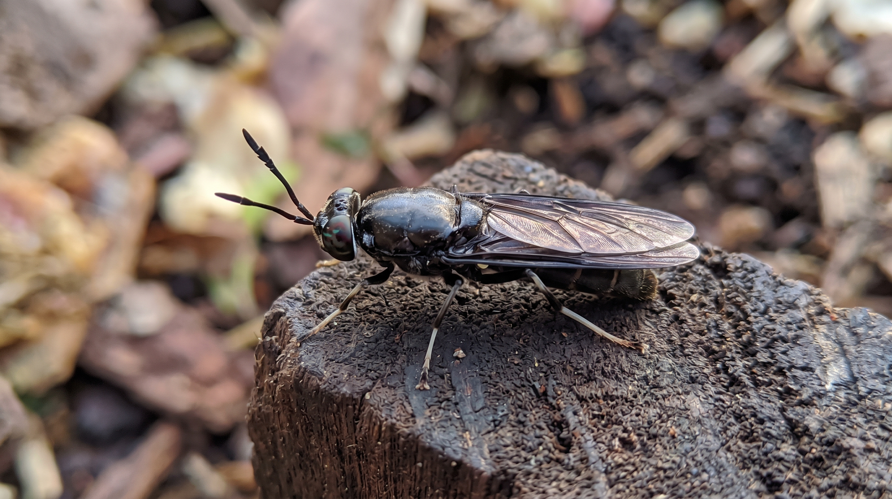
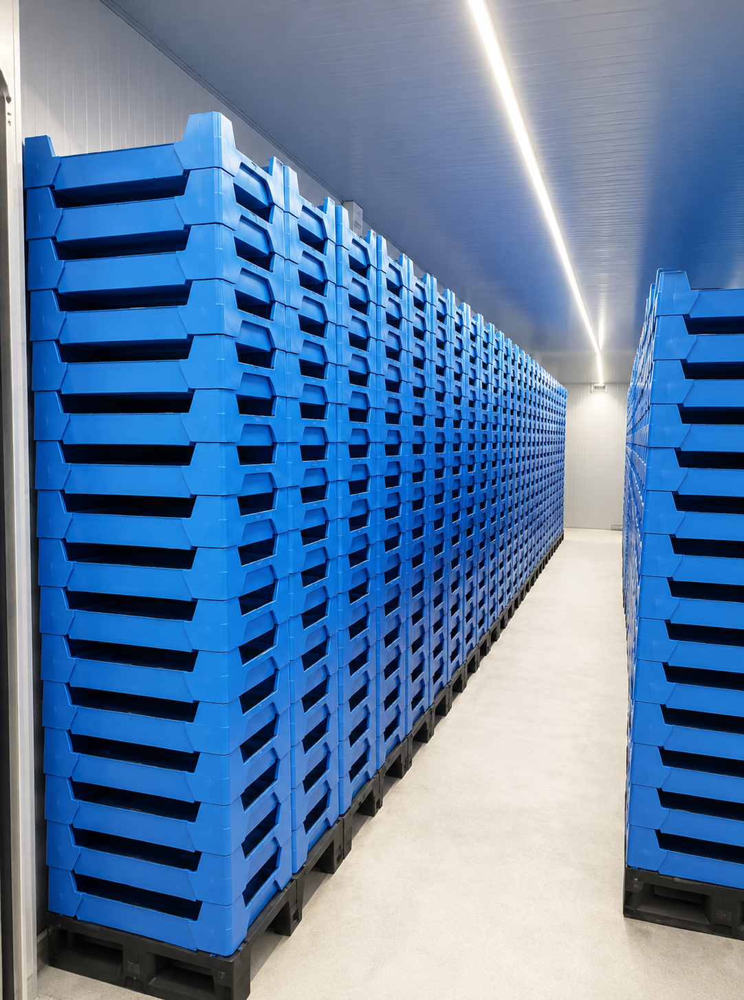
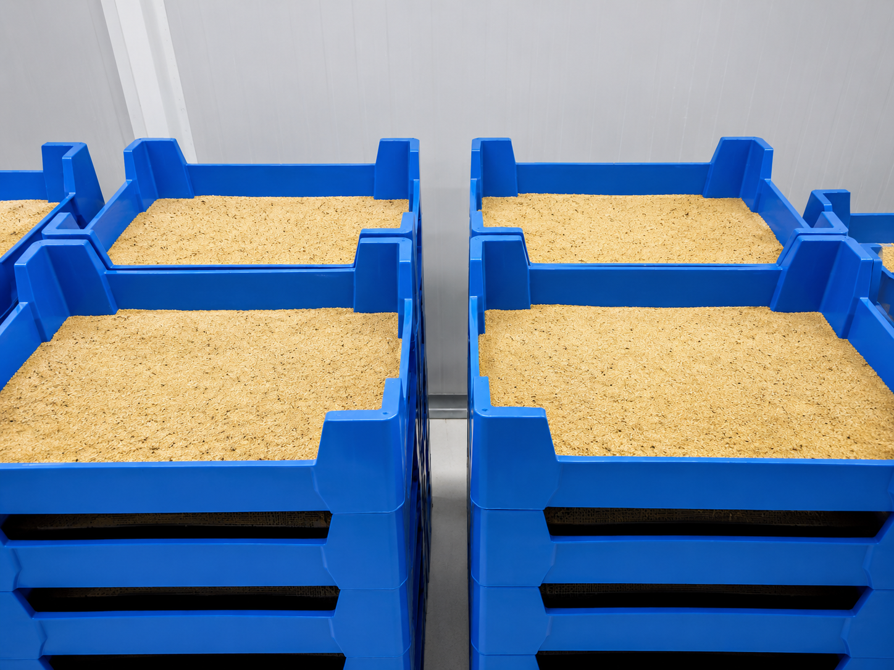
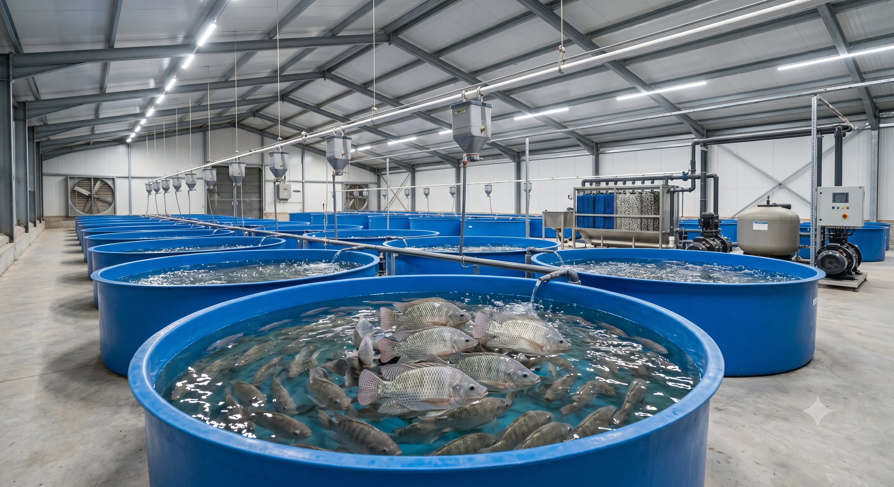
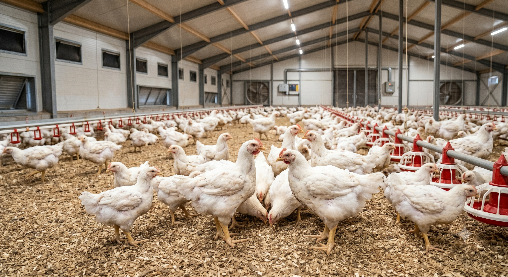
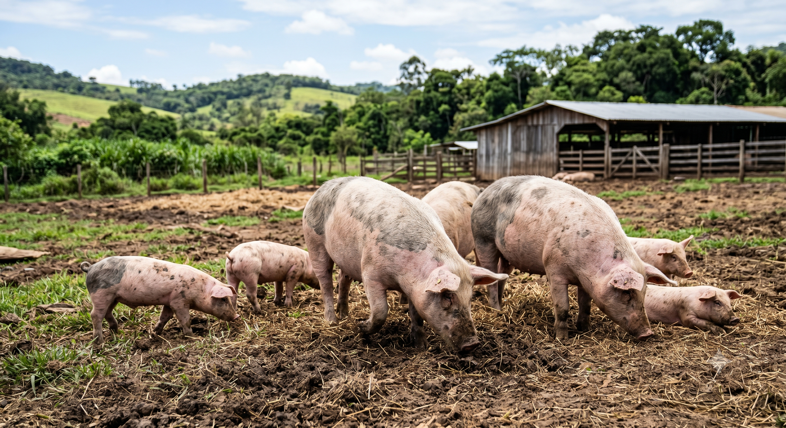

Missão
Pesquisar, desenvolver e produzir ingredientes sustentáveis para nutrição animal, contribuindo para uma cadeia produtiva mais eficiente, segura e alinhada às demandas do mercado.
A PROTEINS – Proteínas Alternativas é uma empresa residente no Biopark, em Toledo–PR, dedicada à pesquisa, desenvolvimento e produção de ingredientes sustentáveis para nutrição animal.
Fundada em abril de 2022, iniciou suas atividades com o cultivo e processamento de Tenebrio molitor e Tenebrio gigante e, atualmente, concentra seus esforços na produção de Black Soldier Fly (BSF).
Nosso diferencial está na capacidade de desenvolver e implantar sistemas próprios para o controle e manejo da criação, aplicando boas práticas de manejo, além de projetar e operar soluções para o processamento das larvas de acordo com as boas práticas de fabricação (BPF), garantindo qualidade, rastreabilidade e eficiência.
Pesquisar, desenvolver e produzir ingredientes sustentáveis para nutrição animal, contribuindo para uma cadeia produtiva mais eficiente, segura e alinhada às demandas do mercado.
Ser referência nacional em proteínas alternativas, reconhecida pela excelência técnica, pela sustentabilidade de nossos processos e pela qualidade dos ingredientes que entregamos aos nossos parceiros.
Da natureza para a nutrição animal



Benefício final: desempenho produtivo + redução de custos + alinhamento às metas ESG.
Comparativo: BSF vs. farinha de ossos e vísceras
| BSF | Farinha de ossos e vísceras | |
|---|---|---|
| Proteína | 50 – 75 | 35 – 50 |
| Gordura | 10 – 15 | 8 – 12 |
| Minerais | 6 – 8 | 20 – 30 |
Fontes: FAO Feed Profiles 2023; SIDDIQUI. Meio Ambiente, Desenvolvimento e Sustentabilidade, 2024.

Substituição parcial aumenta ganho de peso e melhora a conversão alimentar.

Melhora a microbiota intestinal e fortalece a imunidade.

Reduz a inflamação intestinal e melhora a absorção de nutrientes.
Fontes: Frontiers Anim Sci 2025; BMC Vet Res 2024.